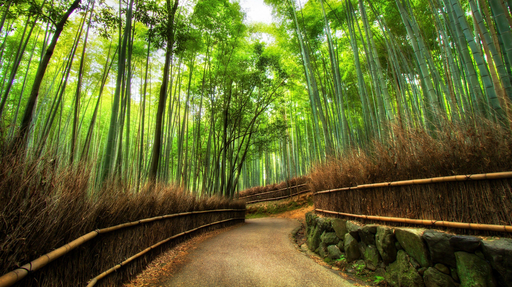
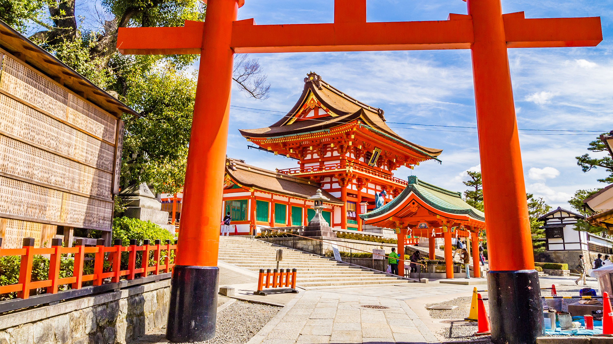
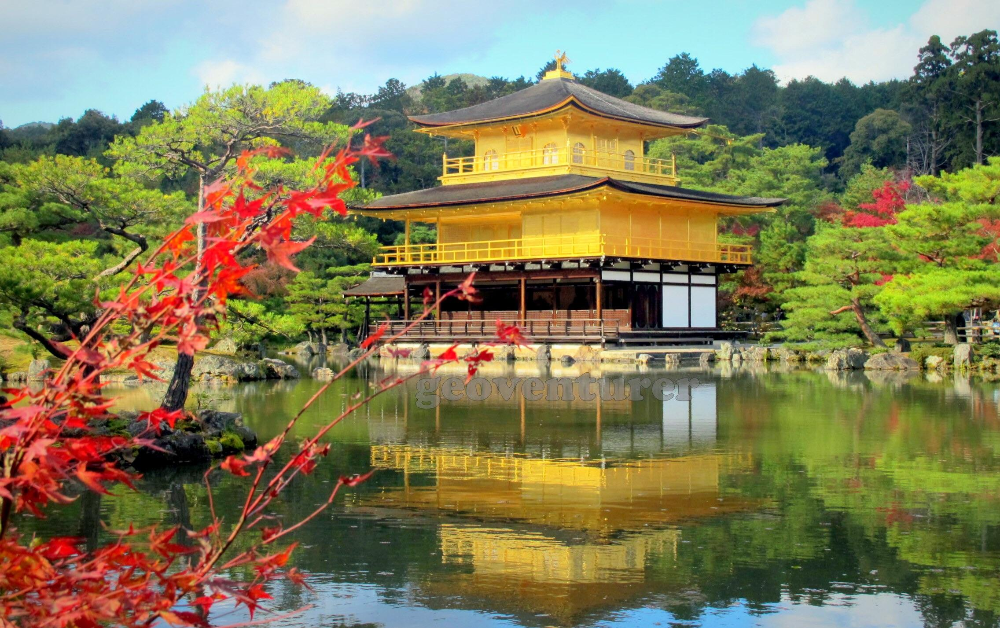

{kind=link}
Kyoto, Japan
Ancient traditions in a modern world
Why Kyoto Is Special To Me
Kyoto is special to me because of its rich history and serene beauty. The blend of ancient temples, traditional gardens, and vibrant culture creates a peaceful escape. It’s a place where I can experience Japan’s heritage and feel a deep sense of tranquility.
How to Get There
Airports:
- Narita International Airport (NRT): The main international gateway to Tokyo, located about an hour from the city center.
- Haneda Airport (HND): Closer to central Tokyo, primarily serving domestic flights and some international routes.
- Kansai International Airport (KIX): Located near Osaka, about 1 hour from Kyoto by train.
Public Transportation:
- Subway & Trains: The JR (Japan Rail) lines and subway systems offer efficient and comfortable travel options across Kyoto and surrounding cities.
- Buses: Kyoto’s buses are an affordable way to explore, though they may be slower due to traffic.
- Taxis & Ride-Sharing: Taxis are readily available but can be more expensive, especially during peak hours.
Other places to visit in Japan

{kind=link}
Arashiyama Bamboo Grove
The otherworldly bamboo forest with towering green stalks creating a natural pathway.

{kind=link}
Fushimi Inari Shrine
Thousands of vermilion torii gates creating tunnels along the mountain trails.

{kind=link}
Kinkaku-ji (Golden Pavilion)
A Zen Buddhist temple covered in gold leaf, perfectly reflected in the mirror pond.

Gion District
Traditional wooden machiya houses and teahouses where geiko (geisha) and maiko (apprentice geisha) can be spotted.